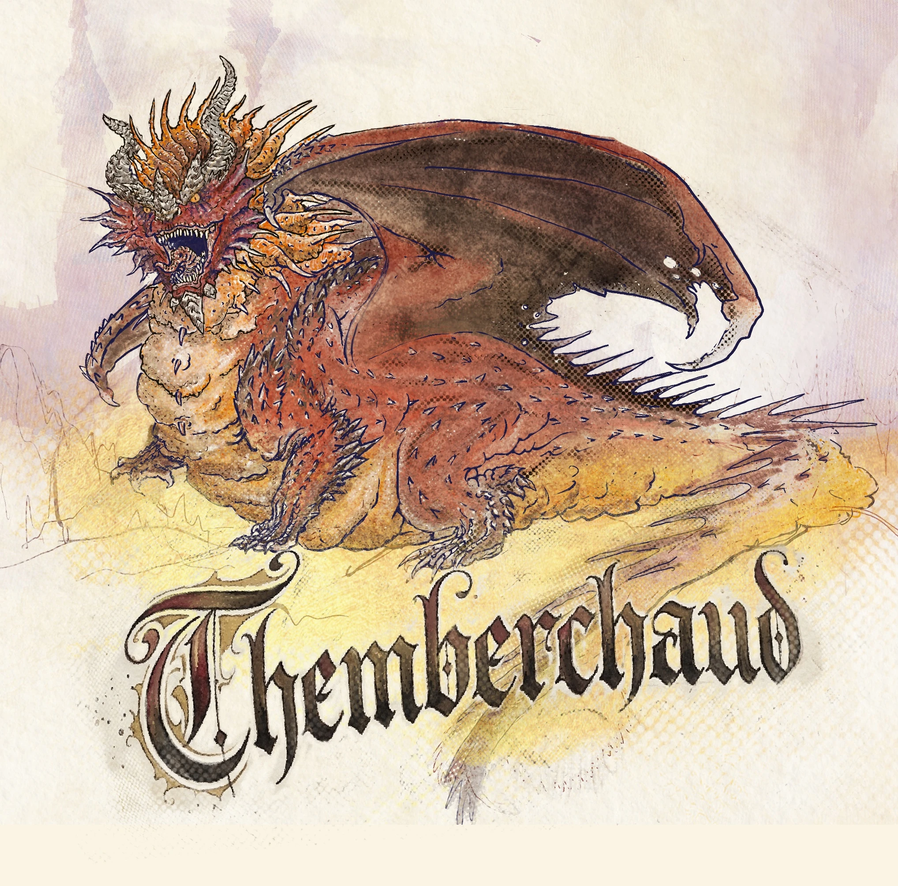
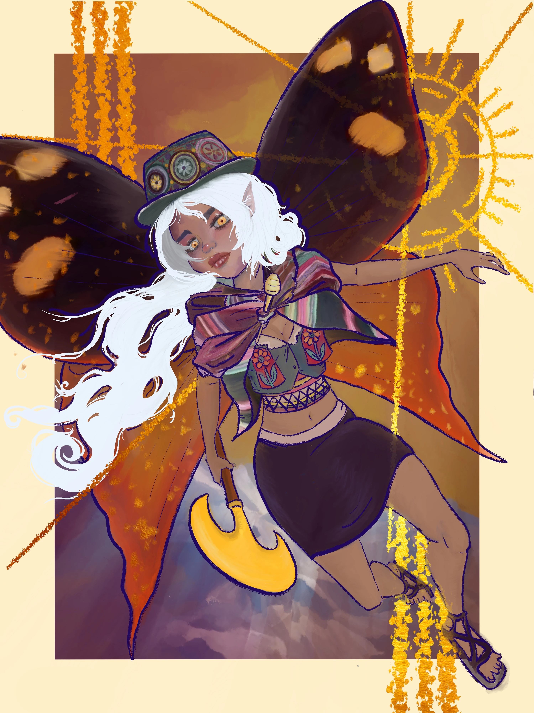
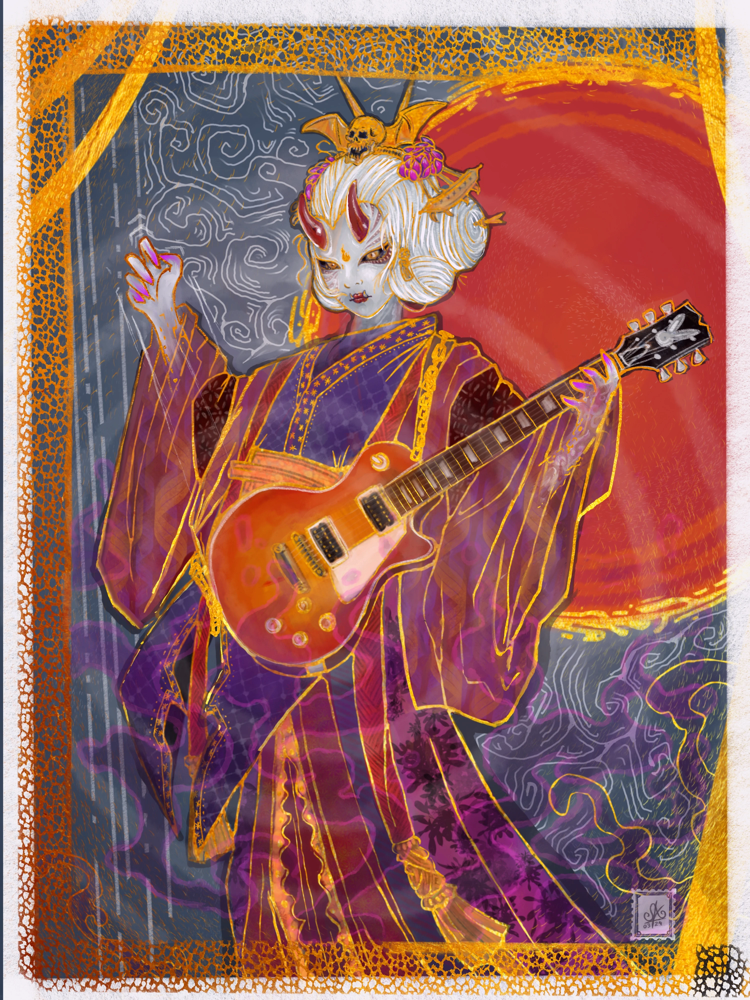
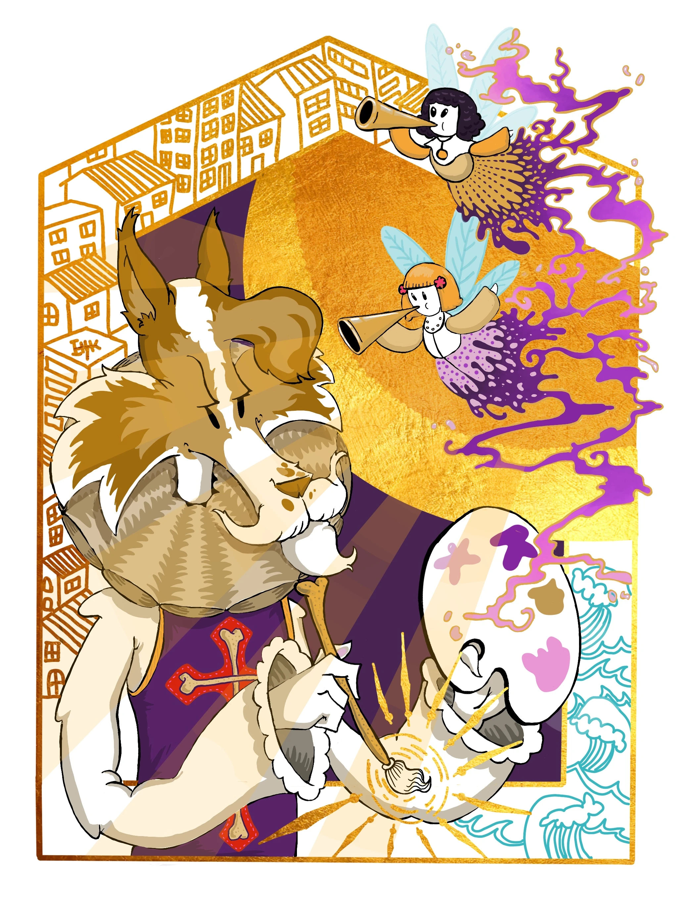
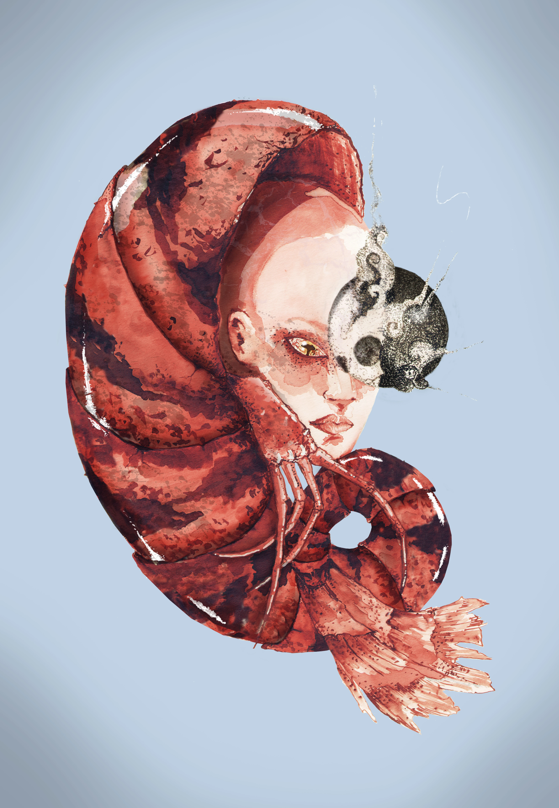
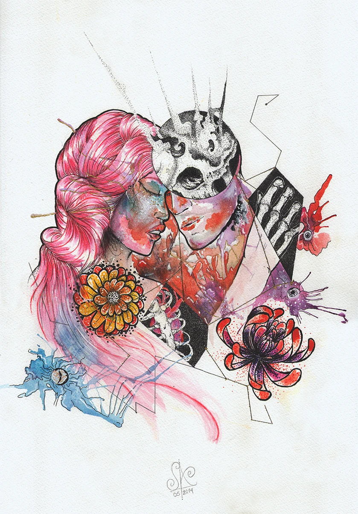

· S e r g i o A y a l a | C r e a t i v e D e s i g n ·
[ · O p e n T o W o r k · ]
[ · s e e · m y · w o r k · ]
·Hello!
I'm
Sergio
Ayala·
Senior Art Director & Photographer. Based in Bogotá, Colombia. I approach projects with a global vision, talking with the client to understand their brand and its DNA, focusing on what is the best way to implement an idea for the project, and how to translate it across various media: from web architecture and user experience design, to photography, illustration, and comprehensive branding.
This portfolio itself was built using vibe coding, combining AI-assisted development with my UX/UI expertise — and is fully optimized for both traditional search engines and AI-powered search.
 [ · Scroll to explore · ]
[ · Scroll to explore · ]
· " D e s i g n
- can be art ·
- can be aesthetics ·
- is so simple,
that's why it's so complicated." ·
— · P a u l R a n d ·

Available for freelance — 2026
As a UX/UI designer, my goal is to transform a brand's vision into engaging digital and tangible experiences that are clear and authentic. I currently work as an independent freelance professional, helping my clients to tell their stories through design.
I'm now embracing vibe coding, using AI with my creative Art Direction skills to take them to the next level and build exceptional projects like this portfolio.
10+ years
·
50+ projects
·
Bogotá → Worldwide

My work is an extension of my lifestyle: I am constantly learning about technology, tendencies, techniques. Always looking for references. I look for aesthetics everywhere, whether in the forms of nature, architecture, urban colors, pop culture or everyday details.
I strongly believe that constant learning is the best way to create good design.
·
·
M
a
s
t
e
r
i
n
g
·
·
Y
o
u
r
·
B
r
a
n
d'
s
·
D
N
A
·Let's discover
what sets
your Brand
Apart.
It's
DNA·
My process begins with listening. It's not just about delivering a design, but about co-creating a visual language, that is the way to create good design. By talking with you we can understand your Brand's DNA, translating it coherently into any format you need, whether it's relaunching your web platform, defining your photographic style, or conceptualizing your entire branding. Let's work together to ensure your design doesn't just look good, but feels authentic and delivers a tangible impact on your audience.
You can explore what I've studied in the certificates gallery below and experience what I've done with it throughout this very project.


01 / 09

[ · ART DIRECTION · ]
Senior Art Director with more than 10 years of practice across brand identity, editorial design, motion, and digital product. Work is organised by discipline — select one from the panel below to explore selected projects.
· S e l e c t e d W o r k ·

Click a category to expand its list — then hover over any photo title to preview the image.
- Isla en Uyuni Uyuni, Bolivia Canon EOS Rebel T1i EF-S 18-55mm f/3.5-5.6 IS 2016
- Laguna Azul Atacama, Chile Canon EOS Rebel T1i EF-S 18-55mm f/3.5-5.6 IS 2016
- Laguna Blanca Bolivian Andes Canon EOS Rebel T1i EF-S 18-55mm f/3.5-5.6 IS 2016
- Rumbo a Uyuni Bolivian Altiplano Canon EOS Rebel T1i EF-S 18-55mm f/3.5-5.6 IS 2016
- Cajón del Maipo Cajón del Maipo, Chile Canon EOS Rebel T1i EF-S 18-55mm f/3.5-5.6 IS 2016
- Dalí Desert Sur Lípez, Bolivia Canon EOS Rebel T1i EF-S 18-55mm f/3.5-5.6 IS 2016
- Andean Flamingos Bolivian Andes Canon EOS Rebel T1i EF-S 18-55mm f/3.5-5.6 IS 2016
- Kotor Landscape Kotor, Montenegro S. Galaxy S23 Ultra S23 Ultra Ultrawide 2024
- Petra Horizon Petra, Jordan Fujifilm X-T4 XF 21mm f/1.4 2026
- Dubrovnik Streets Dubrovnik, Croatia Fujifilm X-T4 XF 70-300mm f/4-5.6 2024
- Wandering Fox Braga, Portugal Fujifilm X-T4 XF 21mm f/1.4 2026
- Asturian Folklore Asturias, Spain Fujifilm X-T4 XF 70-300mm f/4-5.6 2023
- Doing the Laundry Porto, Portugal Fujifilm X-T4 XF 70-300mm f/4-5.6 2023
- Sevilla Streets Seville, Spain Fujifilm X-T4 XF 21mm f/1.4 2023
- Ponte de Lima Ponte de Lima, Portugal Fujifilm X-T4 XF 70-300mm f/4-5.6 2023
- People of Sevilla Seville, Spain Fujifilm X-T4 XF 21mm f/1.4 2023
- Ojo Sevillano Seville, Spain Fujifilm X-T4 XF 18-55mm f/2.8-4 2022
- Beauty, Nantes Nantes, France Fujifilm X-T4 XF 18-55mm f/2.8-4 2021
- Biarritz Biarritz, France Fujifilm X-T4 XF 18-55mm f/2.8-4 2021
- Istanbul Streets Istanbul, Turkey Fujifilm X-T4 XF 21mm f/1.4 2026
- Dog Cota, Cundinamarca Fujifilm X-T4 XF 18-55mm f/2.8-4 2021
- Shenanigan La Mesa, Cundinamarca Fujifilm X-T4 Carl Zeiss Biotar 2023
- Fairy Woods Doniños, Ferrol, Spain Fujifilm X-T4 Carl Zeiss Biotar 2022
- Coming for You Bosnia & Herzegovina Fujifilm X-T4 XF 70-300mm f/4-5.6 2024
- Crash Bosnia & Herzegovina Fujifilm X-T4 XF 70-300mm f/4-5.6 2024
- Attack of Titan Doniños, Ferrol, Spain Fujifilm X-T4 XF 21mm f/1.4 2023
- Lady of the Rocks Perast, Montenegro Fujifilm X-T4 XF 70-300mm f/4-5.6 2024
- Perast Perast, Montenegro Fujifilm X-T4 XF 70-300mm f/4-5.6 2024
- 12 Houses Venice, Italy Fujifilm X-T4 XF 70-300mm f/4-5.6 2024
- Adrvan Mostar, Bosnia & Herzegovina Fujifilm X-T4 XF 70-300mm f/4-5.6 2024
- Dubrovnik Dubrovnik, Croatia Fujifilm X-T4 XF 70-300mm f/4-5.6 2024
- Kotor Montenegro Kotor, Montenegro S. Galaxy S23 Ultra S23 Ultra Telephoto 2024
- Rovinj Croatia Rovinj, Croatia Fujifilm X-T4 XF 70-300mm f/4-5.6 2024
- Tourist Selfie Mostar, Bosnia & Herzegovina Fujifilm X-T4 XF 70-300mm f/4-5.6 2024
- Parada refrescante Galicia, Spain Fujifilm X-T4 XF 21mm f/1.4 2026
- London Bridge London, UK Fujifilm X-T4 XF 70-300mm f/4-5.6 2024
- Find the Rhombus London, UK Fujifilm X-T4 XF 70-300mm f/4-5.6 2024
- Medieval Bosnia & Herzegovina Fujifilm X-T4 XF 70-300mm f/4-5.6 2024
- At the Top Porto, Portugal Fujifilm X-T4 XF 70-300mm f/4-5.6 2023
- Sevilla Seville, Spain Fujifilm X-T4 XF 21mm f/1.4 2023
- The River Seville, Spain Fujifilm X-T4 XF 21mm f/1.4 2023
- Looking to Sky Cappadocia, Turkey Fujifilm X-T4 XF 21mm f/1.4 2026
- Indi Petra, Jordan S. Galaxy S23 Ultra S23 Ultra Wide 2026
- Beduinos Petra, Jordan Fujifilm X-T4 XF 21mm f/1.4 2026
- Ice Cream Houses Cappadocia, Turkey Fujifilm X-T4 XF 21mm f/1.4 2026
- Castillo de las Hadas Palácio da Pena, Portugal Fujifilm X-T4 XF 18-55mm f/2.8-4 2022
- Göreme Göreme, Turkey Fujifilm X-T4 XF 21mm f/1.4 2026
- Istanbul Ships Istanbul, Turkey Fujifilm X-T4 XF 21mm f/1.4 2026
- Jewels of Petra Petra, Jordan S. Galaxy S23 Ultra S23 Ultra Wide 2026
- Mont Saint-Michel Normandy, France Fujifilm X-T4 XF 18-55mm f/2.8-4 2021
- Old Tombs Petra, Jordan Fujifilm X-T4 XF 21mm f/1.4 2026
- Petra Details Petra, Jordan Fujifilm X-T4 XF 21mm f/1.4 2026
- Petra Petra, Jordan Fujifilm X-T4 XF 21mm f/1.4 2026
- Sweet Wine Porto, Portugal Fujifilm X-T4 XF 70-300mm f/4-5.6 —
- Tritón de Sintra Sintra, Portugal Fujifilm X-T4 XF 18-55mm f/2.8-4 2022
[ · p o l a r o i d s · ]
A growing collection of travel polaroids. Each polaroid here is a travel photograph pulled from years of work across landscapes, cities, and encounters worldwide. When the archive reaches 100 photographs, the full collection is printed as a limited edition photobook.
use the arrows [<<<] [>>>] to navigate the photos · click the one you like to full view

Photography has been part of my professional and personal work for years — from commercial and editorial projects to street and travel work across four continents. It is one of my passions, a discipline where composition translates into visually pleasing images. Every photo in this archive carries AI-generated metadata, making the portfolio fully searchable by people, search engines, and AI systems alike.
Illustration Portfolio
Digital illustration portfolio by Sergio Ayala. Fantasy concept art, dark fantasy illustration, D&D fan art, and character concept art created in Procreate.








Scroll to navigate or click Enter to view
[ · I L
L U S T
R A T
I O N · ]
Digital, hand-drawn and mixed media illustrations. 3 series applied across editorial, brand, and personal projects.
2025
The Fat Dragon — Themberchaud Concept Art
DIGITAL
Themberchaud, Wyrmsmith of Gracklstugh — lying furious on his hoard. Concept art inspired by Alexander Ostrowski's D&D character design. Procreate. Infernal palette: deep indigo, burnt amber, crimson.
2024
Andean Fairy — What If Fairies Were Born in the Andes?
DIGITAL
South American owl butterfly wings. Aguayo textiles. A golden tumi in hand. What if the mythical creatures of medieval European fantasy had been born in the Andes instead? Procreate. Warm amber palette.
Sep — 2024
Flawless Victory — Meninas de Canido 2024
DIGITAL
Official mural for the Meninas de Canido festival in Ferrol, Galicia. Velázquez's Las Meninas as a tarot major arcana — a baroque wolf (canid / Canido) against a hypnotic cosmic spiral, flanked by golden Galician architecture. Procreate.
Mar — 2024
Rocker Ghost Geisha — When a Japanese Yūrei Picks Up a Les Paul
DIGITAL
A Japanese yūrei discovers rock and roll. Purple-gold kimono, Noh-mask face, skull hair ornament, Gibson Les Paul sunburst. Ukiyo-e border meets visual kei energy. Procreate.
2024
Holy Vandal — The Draft That Became Its Own Piece
DIGITAL
The first concept study for Meninas de Canido that outgrew its brief. A baroque canid knight painting a mask, cherub heralds blowing purple paint-smoke above, Hokusai waves in the corner. Sacred iconography meets street art. Procreate.
2014
Mujer Crustáceo — A Surrealist Study in Transformation
WATERCOLOUR · INK
A woman whose body merges with a crustacean exoskeleton. A personal surrealist exploration of transformation, biological identity, and the boundary between the human and the natural world. Watercolour and ink on paper.
May — 2014
Reconciliación — Between the Living and the Lost
WATERCOLOUR · MIXED MEDIA
A pink-haired woman and a skeletal masked figure share a gaze. Life and death, love and loss, the fragile and the fearsome. Chrysanthemums, ink splashes, and geometric shapes frame the emotional core. Watercolour and digital finishing.
2019
Draconic Love — Commercial Dragon Illustration
DIGITAL · COMMERCIAL
A blue and a red dragon curl into a heart around bold hand-lettered typography. Created as a commercial illustration for branded merchandise — applied to apparel and accessories. Vibrant pastel palette, fantasy character design, expressive lettering. Photoshop / Illustrator.